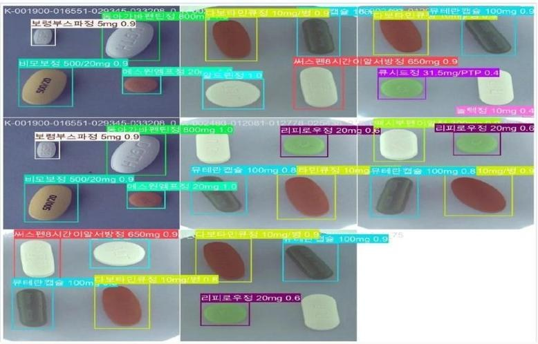

소개
미국 대학원에서 석유공학을 연구하며 해석해, 인공신경망 대리 모델, 시계열 예측 모델을 만들고 검증했고, 지금은 LLM과 RAG의 답을 측정하는 평가 코드를 만듭니다.
SAVERS에서는 챗봇이 거절해야 할 질문에 답하는 결함을 찾아 검색 단계까지 추적했고, 입찰메이트에서는 점수를 막던 골든셋 오류와 근거 잘림을 찾아 고쳤습니다. 영어 발표와 문서 작성이 자유롭습니다 (TOEIC 985).
만들고 검증한 것들
수상한 해커톤 프로젝트와 부트캠프 팀 프로젝트입니다. 카드를 누르면 문제와 결정, 결과를 정리한 글로 이어집니다.

SAVERS · 재난 취약계층 맞춤 대피 안내
고용노동부장관상 · 326팀 중 공동 3위 · ACK 2026 제1저자호우·홍수 특보 때 위치와 이동 능력에 맞는 대피소와 도보 경로를 알려 주는 웹 앱입니다. 대피소와 경로는 규칙 코드가 정하고 LLM은 설명만 하게 나눴고, 그 경계가 지켜지는지 재는 평가 코드를 만들었습니다.
입찰메이트 · 공공 RFP 문서 RAG 질의응답
공공기관 제안요청서 100건에서 근거를 달아 답하고 문서에 없는 질문은 거절하는 RAG 챗봇입니다. 95문항 골든셋과 채점기를 만들고, 점수를 막던 골든셋 오류와 근거 잘림을 찾아 고쳤습니다.

AI 광고 스튜디오 · 소상공인용 광고 이미지·문구 생성
제품 사진 한 장으로 배경과 문구를 생성해 광고 이미지와 쇼츠를 만드는 서비스입니다. 사진 속 제품이 바뀌지 않았는지를 1순위 지표로 정하고 판정 기준을 설계했습니다.

PillScope · 경구약제 이미지 객체 탐지
생김새가 비슷한 알약 56종을 사진에서 찾아 구별하는 객체 탐지 모델입니다. 학습 이미지 186장과 51배 클래스 불균형을 증강과 누수 방지 split으로 풀었습니다.
제1저자로 발표한 논문
대학원 연구
The Pennsylvania State University · 2015.08 – 2024.12 · 석유·에너지 분야 수학적 모델링